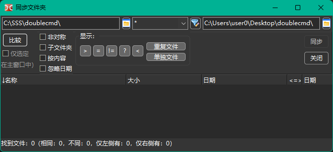
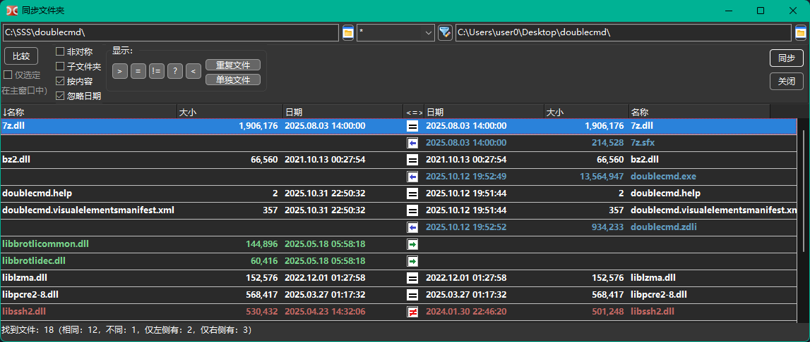
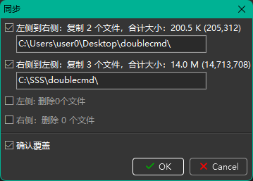

同步文件夹工具会扫描左、右文件面板的文件夹，显示它们内容的差异，并允许将其同步一致。
可以同步两个本地文件夹，或本地文件夹与虚拟文件系统中的文件夹（如打开的压缩包或文件系统插件中的文件夹）。
默认情况下，同步工具会按文件名、大小和修改日期进行比较。
删除文件的方式（移至回收站或永久删除）取决于 删除到回收站（按下 Shift 键切换此设置） 选项的状态。
注意：空文件夹会被忽略。

窗口顶部显示左、右文件面板的当前文件夹，可以手动修改或通过按钮选择文件夹。
中间有一个文件掩码过滤字段（符号“*”表示匹配任意字符数，符号“?”表示匹配任意单个字符）。不匹配掩码的文件会被忽略。可用分号“;”分隔多个类型（无需空格），也可使用搜索模版（ ），包括内容插件搜索。默认值为“*”（全部文件）。
），包括内容插件搜索。默认值为“*”（全部文件）。
带箭头的按钮可打开已用文件掩码列表（注意 Double Commander 会为多个工具保存掩码历史：查找文件、同步文件夹、解包归档、批量选择等）。默认情况下（无论 文件掩码历史记录 选项状态如何），Double Commander 会保存上次使用的掩码作为下次同步工具的默认掩码（若不是搜索模版），详见 附加配置。
要排除文件夹及符号链接，可用搜索模版和 排除子文件夹 字段。
比较 – 开始比较所选文件夹，进度显示在状态栏。如有需要可按 Esc 键中断。
参数：
仅选定在主窗口中 – 启用后，仅比较文件面板中已选中的文件和文件夹，只需在一个面板选择即可。
非对称 – 用于备份：左侧内容将复制到右侧，右侧不存在于左侧的文件会被标记为删除。若右侧文件夹无法删除（如只读归档或光盘），此选项不可用。
子文件夹 – 递归查找文件，Double Commander 会检查所有子文件夹内容。
按内容 – 启用后，大小和日期相同的文件会按内容（字节级）比较。若第二文件夹为虚拟文件系统则不可用。
忽略日期 – 默认优先较新文件并自动选择复制方向，启用后，大小相同的文件视为相同。
更改选项后需重新比较。
显示： – 一组按钮用于显示或隐藏不同类型文件：
> – 显示左侧需复制或删除的文件。
= – 显示当前参数下被视为相同的文件。
≠ – 显示不相同的文件。
? – 显示状态为“未知”的文件（如损坏的符号链接或内容比较时无法读取的文件）。
< – 显示右侧需复制或删除的文件。
重复 – 显示两侧都存在的文件。
单侧 – 显示仅一侧存在的文件。
下方区域分为三部分：
左、右分别显示文件列表，均有“名称”、“大小”、“日期”列，可点击表头排序。
中间列显示文件状态或计划操作。
状态栏显示整体比较结果。
比较完成后，同步工具会用不同颜色显示文件夹内容：

绿色 – 左侧选中需复制或删除的文件。
蓝色 – 右侧选中需复制或删除的文件。
红色 – 同名但不相同的文件。
其他文件使用默认文本颜色。
可在 颜色 设置（“同步文件夹”类别）中更改。
“<=>” 列的图标含义：
– 未知；
– 相同文件；
 – 不同文件；
– 不同文件；
– 将文件复制到右侧；
 – 将文件复制到左侧；
– 将文件复制到左侧；
– 左侧文件将被删除；
 – 右侧文件将被删除；
– 右侧文件将被删除；
– 两侧文件都将被删除；
– 无操作。
可用鼠标或 空格 键取消操作，将文件排除在同步之外。
双击文件名可调用 按内容比较 命令。
使用快捷键 Ctrl+C 可复制所有列内容到剪贴板。
关闭 – 关闭同步工具。
同步 – 打开同步确认对话框，显示即将执行操作的详细信息：

可按类型（复制或删除）或方向排除计划操作。
确认覆盖 – 如遇重名，Double Commander 会弹出与常规复制/移动相同的选择对话框（跳过、重命名等）。
命令可作用于光标所在文件或已选文件。所有同步工具支持的命令都已加入右键菜单。可在 按键 > 热键 设置（切换到“同步文件夹”类别）中分配或更改快捷键。
选择复制方向（默认方向） – Double Commander 会重新检查文件并自动选择操作。
删除选择 – 取消已分配操作，将文件排除在同步过程之外。
选择复制方向 ->（从左到右）。
选择复制方向 <-（从右到左）。
反转复制方向。
查看左侧 和 查看右侧 – 在文件查看器中打开光标所在左/右侧文件。
比较 – 对光标所在文件调用按内容比较命令。
选择删除方向 <-（左）。
选择删除方向 ->（右）。
选择删除 <->（两边都有）。
<- 删除左边。
-> 删除右边。
两边都删除。
最后三项命令会在同步操作前立即删除选中文件，此时 Double Commander 会弹出确认请求。
注意：查看左侧、查看右侧和比较命令的快捷键由 Double Commander 源码固定，无法更改。